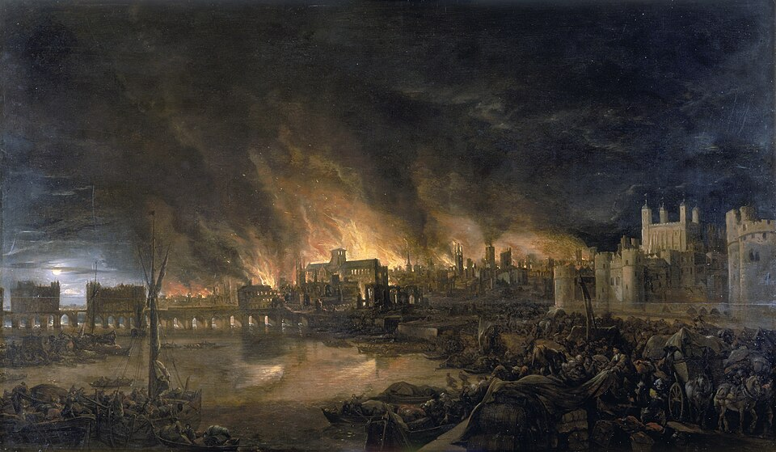

⛏Don't stand in the fire or you'll take damage.
火の中に立たないでください。ダメージを受けます。
/ˌdoʊnt̚ ˈstænd ɪn ðə ˈfaɪər ɔr ˈjuːl ˈteɪk ˈdæmɪdʒ/
- stand の /d/ が in の /ɪ/ に連結 [stænˈdɪn]
- the は弱形 /ðə/
- take の /k/ が未開放 [ˈteɪk̚]
ドウント スタンディン ザ ファイアー オア ユール テイク ダメッジ

⛏Don't stand in the fire or you'll take damage.
火の中に立たないでください。ダメージを受けます。
⛏I fired my bow at the skeleton.
スケルトンに弓を撃った。
⛏The TNT will fire when you light it with flint and steel.
フリント&スティールで点火すると、TNTが発動します。
The fires in the Nether are extremely dangerous, so we must avoid them.
ネザーの炎は非常に危険なため、避ける必要があります。
We collected wood from the forest before multiple fires blocked our path.
複数の火が我々の道を塞ぐ前に、森から木を集めました。
He fires his bow at the skeleton that attacked him.
彼は自分を攻撃してきたスケルトンに向かって弓を放つ。
She fires arrows rapidly at the creeper approaching the base.
彼女は基地に接近してくるクリーパーに向かって矢を素早く発射する。
I fired my crossbow three times before running out of arrows.
矢がなくなるまでに、自分のクロスボウを3回発射した。
They fired at the Ender Dragon when it flew over the island.
島の上空を飛んでいるエンダードラゴンに向かって彼らが発射した。
Having fired all my arrows, I switched to my sword.
すべての矢を発射してしまったので、剣に切り替えた。
The cannon fired by the defense system destroyed the attacking mob.
防御システムによって発射された大砲が、攻撃してくるモブを破壊した。
Firing the cannon repeatedly kept the monsters away from the base.
大砲を何度も発射することで、モンスターが基地から遠ざかった。
We are firing arrows nonstop to defeat the Wither boss.
Witherボスを倒すために、矢を絶え間なく発射している。
⛏We were under fire from the archers on the tower.
塔の弓使いたちからの銃撃を受けていました。
⛏I opened fire on the creepers with my crossbow.
クロスボウでクリーパーに対して開火した。
⛏The wooden house caught fire from the lava nearby.
木造の家が近くのマグマから火がついて燃えました。